| 日付 | 2025年11月30日（日） |
|---|---|
| 山域 | 奥秩父 |
| メンバー | 単独 |
| 山行形態 | 日帰り |
| アクセス | 車 |
| ルート (Map) | 休暇村駐車場 (8:07) - (8:42) 登山口 - (9:35) 岩峰 - (10:34) 五郎山 (11:00) - (12:37) 幻の滝 - (12:58) 休暇村駐車場 |
五郎山は奥秩父の北にある寂峰だ。
特徴的な岩山なので、前から登りたいと思ってマークしていたのだが、
アクセスが不便な山であるので、登らないままいつしか忘れてしまっていた。
久々にこの山の存在を思い出し、行ってみることにする。
休暇村の側にある駐車場に車を停める。標高1500m。
右手に見えているのが五郎山の辺りだ。
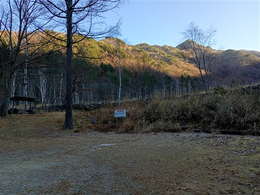
最初は林道を歩いていく。
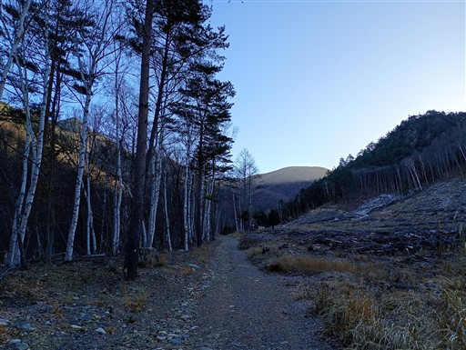
しばらく歩くと車止めのコーンがある。
悪路だが、ここまで車で入る人もいる。
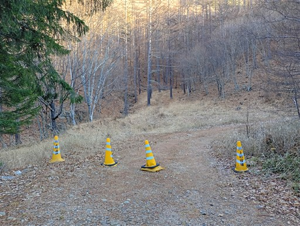
周囲はカラマツ林が延々と続いている。
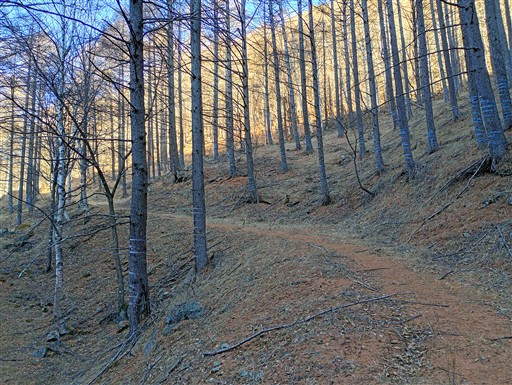
しばらく歩くと、枝で林道が塞がれている。ここが登山口だ。
長い林道歩きで集中力が切れてきている辺りなので、このような配慮はありがたい。
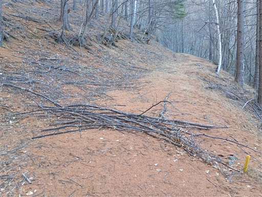
ここからようやく登山道になる。
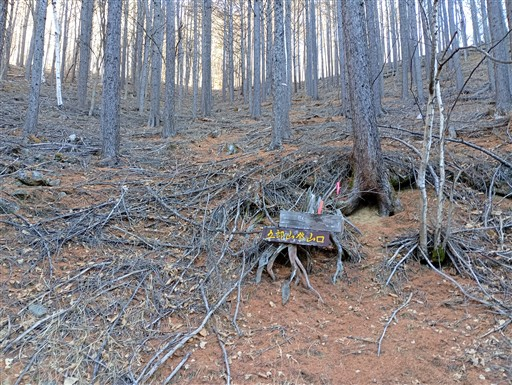
結構な急斜面だが、若干ジグザグに登山道が付けられているので歩きやすい。
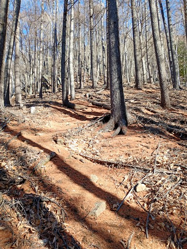
ところどころ、岩が露出している。
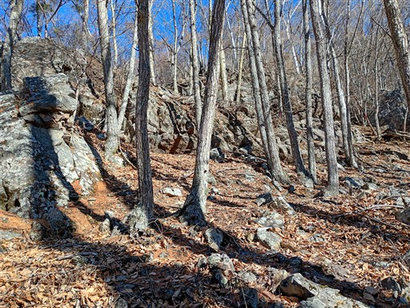
急斜面を登りきると、尾根上に出て大展望が広がる。
正面奥に見えているのは小川山。
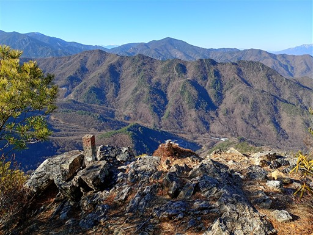
奥秩父の山々が間近に眺められる。
見えているのは国師ヶ岳～金峰山の稜線だ。
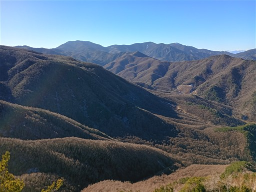
八ヶ岳もきれいに見えている。
右端に見えているのは、今年の夏に歩いた天狗山～男山だ。
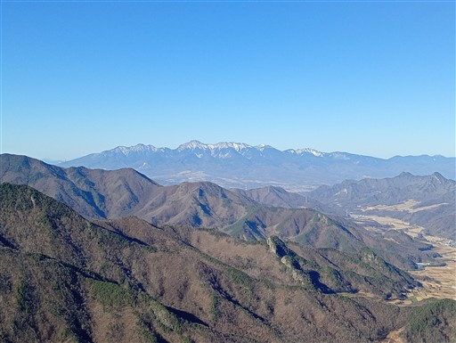
崖の上に身を乗り出すと、さらに右の方が見える。
遠くにぼんやりと見えているのは北アルプス。右手の山は御座山だ。
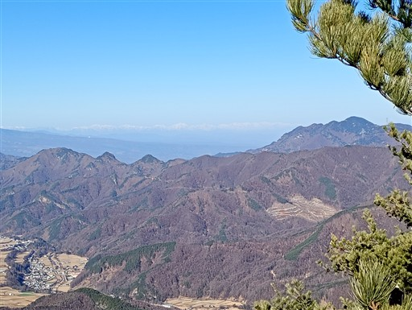
展望を満喫したら先に進む。ここから先は岩尾根だ。
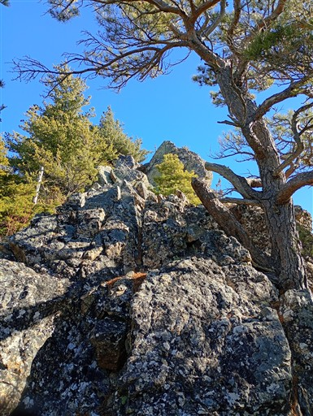
ところどころに雪がある。

ナイフリッジの岩尾根。
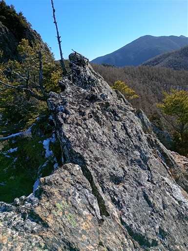
尾根の先端に出たら、目の前に五郎山が聳える。
岩に囲まれた迫力ある姿だ。
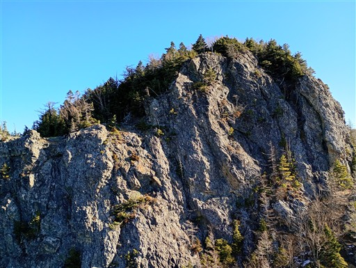
しかし、ここから先は切れ落ちている。
途中までなら下れないこともなさそうだが、その下が見えないし、
どう考えても登山道ではない。
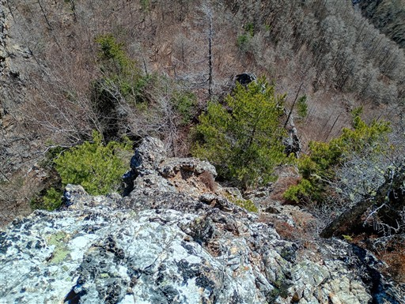
少し引き返して、岩尾根の北側にある巻道を見つける。
北側なので雪が多く、ちょっと苦しい。
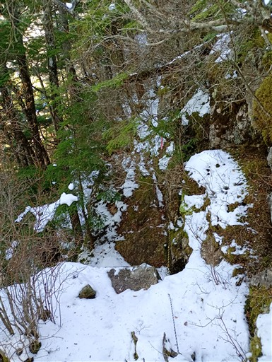
巨大な岩の麓に登山道が続いている。
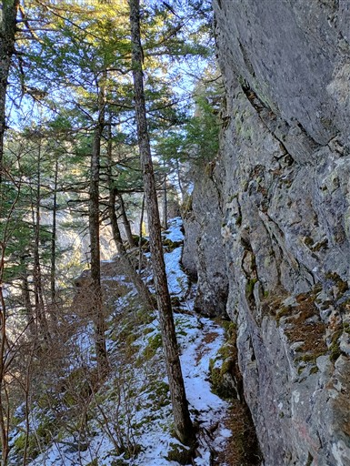
雪と樹木に阻まれた登山道。
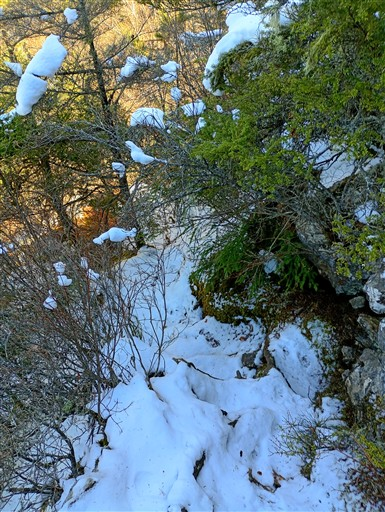
最低鞍部を過ぎて、五郎山の登りに差し掛かる。
振り返ると、先ほど立っていた尾根の先端部が見える。
頑張ったら復路で岩を直登できるだろうか？
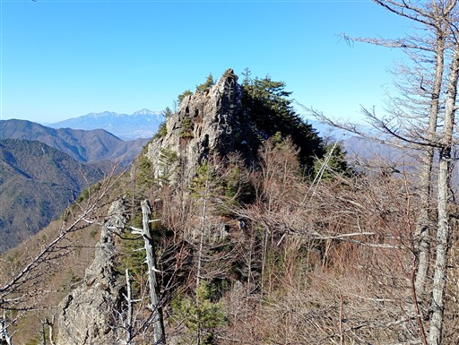
五郎山、標高2132m。
岩に囲まれた山頂は、岩を避けて東側から回り込んで到達する。
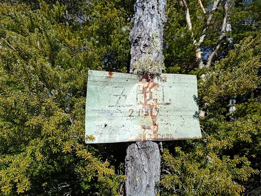
山頂の様子。半分くらいは樹木に覆われて展望がない。
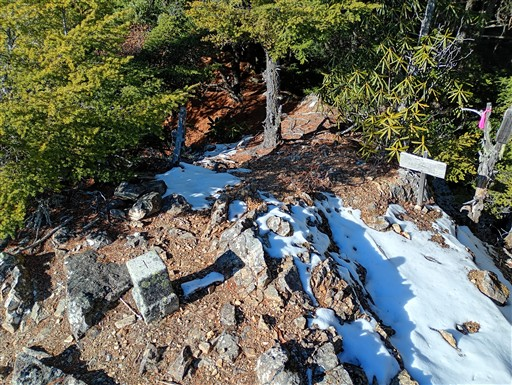
残り半分は展望が広がるが、先ほどの展望台ほどではない。
ここまで来ると、南東方向の展望が広がる。見えているのは甲武信ヶ岳の辺りだ。
間近に奥秩父の山々が眺められる展望台なのだが、ゆったりとした山容の山ばかりで今一迫力がない。
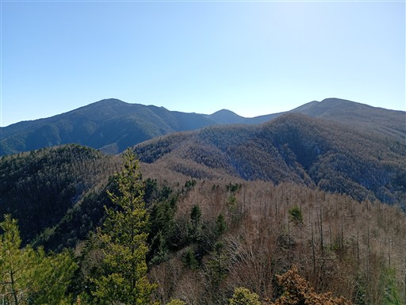
昼食を取ったら下山開始。
岩尾根の直登を試みてみるが、途中で割と難しい場所に行き当たり撤退。
他の場所から登れそうな場所があるかもしれないが、危険なのでほどほどで自重する。
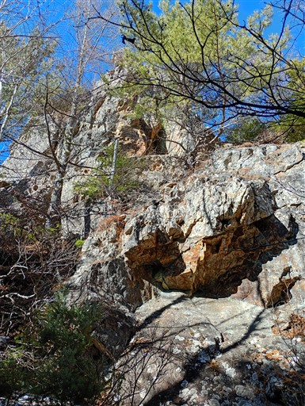
登山道を辿って岩尾根に出てくる。この先は行き止まりの岩尾根なのに
ピンクリボンが付いているのはどういうことなのだろう？

北側に浅間山が見えている。登りの時には気付かなかった。
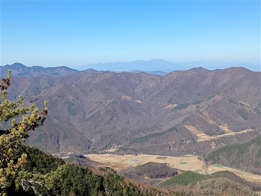
岩峰の上にピンクリボンが付いている。
松の木が邪魔で、突っ切るのは難しそうだ。
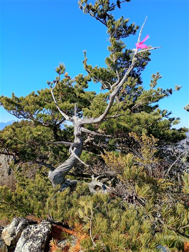
登りは右側から回り込んだので、下りは左側から辿ってみることにする。
こちらの方が雪がないので歩きやすい。
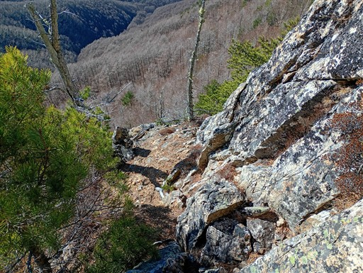
下山。幻の滝の標識があるので行ってみることにする。
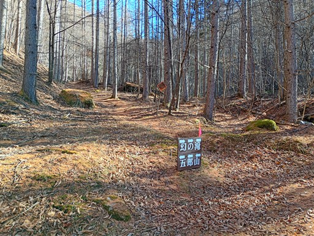
水しぶきが凍り付いている。気温は氷点下だろうか？
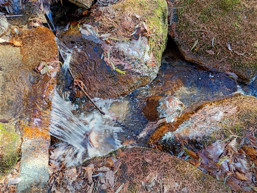
幻の滝に到着。水量の少ない季節なので、名前からして枯れているかもと思っていたが
思ったより立派な滝だった。三段に流れ落ちる滑滝だ。
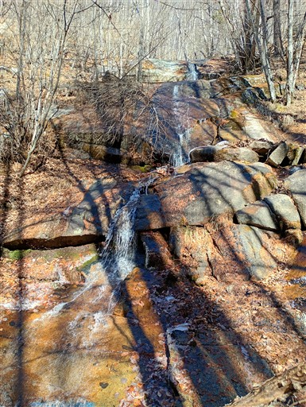
林道を歩いて駐車場に戻ってくる。
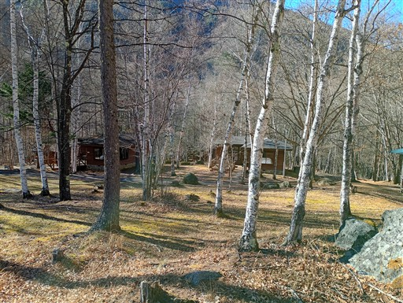
キャンプサイトにある標識。
五郎山はともかく、林岳、岩岳など聞いたこともない。登山道があるとも思えないが…
五郎山は好展望が広がる、それなりに良い山だった。
岩尾根はあったが、岩場と呼べる場所はあまりなく、そこはちょっと不完全燃焼だった。
アクセスがかなり不便な山なので、これからも静かな山であり続けそうだ。
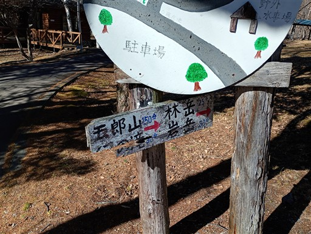